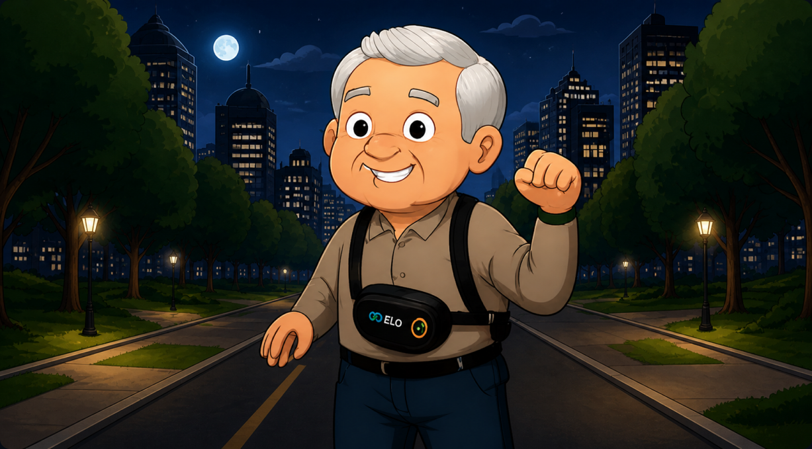

ELO: O Jogo
Uma jornada interativa sobre cuidado, conexão e tecnologia.
Ele não bateu a meta de produtividade e foi descartado no lixão. Agora é subir de volta até o topo.

Jogar
Carregando o jogo
Gire o celular
O jogo é na horizontal. Deite o aparelho para continuar.
Pronto para jogar
O jogo abre na tela toda. Deite o celular para jogar.
Entre na sua conta para jogar
O jogo é para cuidadores cadastrados na ELO. Depois de entrar, você volta direto para cá.
O jogo ainda está em desenvolvimento
Assim que a equipe publicar a versão jogável, ela abre aqui mesmo, dentro do site.
Conhecer a pochete enquanto issoHistória do jogo
Um chefão mede todo mundo pela produtividade. E, do mesmo jeito que a gente manda para o ferro-velho o carro que não usa mais, ele descarta quem deixou de ser produtivo o bastante. É o que acontece com um idoso que não bateu a meta: ele vai parar no lixão.
O jogo é a volta dele até o topo. Começa no lixão, onde é preciso passar pelo Porteiro, que toma conta do lugar. Depois vem um esgoto cibernético, cheio de ratos cibernéticos, onde ele junta cartões de acesso para seguir em frente. É o caminho com menos vigilância, por onde dá para atravessar a cidade longe da segurança.
Na última fase, o chefão está bem protegido. Antes de enfrentá-lo, é preciso desligar os computadores que o defendem sem ser pego pela segurança do lugar. Com os computadores desligados, o combate é liberado, e vencer o chefão termina o jogo.
Demonstração do jogo
Uma partida da Fase 1: Elias junta munição, derruba o Porteiro com dois tiros e desce pelo bueiro até a Fase 2.